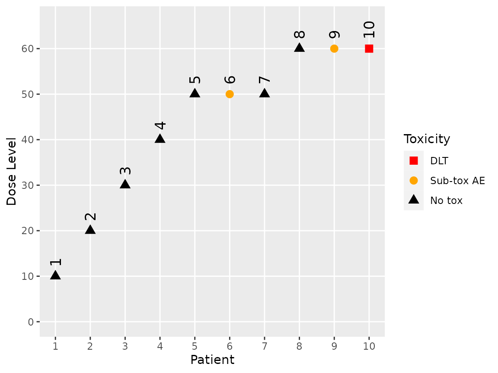
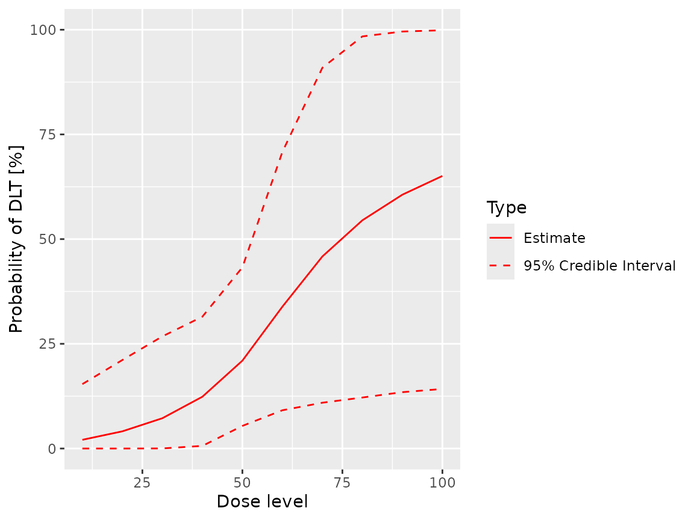
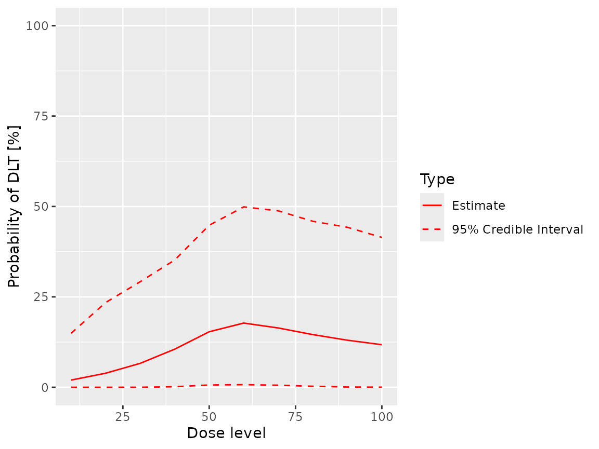

library(crmPack)
#> Loading required package: ggplot2
#> Registered S3 method overwritten by 'crmPack':
#> method from
#> print.gtable gtable
#> Type crmPackHelp() to open help browser
#> Type crmPackExample() to open exampleIntroduction
The original CRM model introduced by (O’Quigley, Pepe, and Fisher 1990) dichotomises toxicity events as either “Not toxic” or “DLT”. The ordinal CRM generalises this model by classifying toxicities on an ordinal scale with an arbitrary number of categories (though use of more than three or four would be unusual).
This approach is particularly useful in non-oncology settings, where there is a greater interest in adverse events that are not dose limiting but are nonetheless undesirable.
Implementation
Ordinal data
crmPack uses the DataOrdinal class to
record data observed during an ordinal CRM trial. The
OrdinalData class differs from the Data class
only in that it contains an extra slot, yCategories, that
defines both the number of toxicity grades and their labels.For
example:
empty_ordinal_data <- DataOrdinal(
doseGrid = c(seq(from = 10, to = 100, by = 10)),
yCategories = c("No tox" = 0L, "Sub-tox AE" = 1L, "DLT" = 2L),
placebo = FALSE
)defines a DataOrdinal object with three toxicity grades,
labelled “No tox`”, “Sub-tox AE” and “DLT”.
Note that the
yCategoriesslot must be an integer vector with values ordered from0tolength(yCategories) - 1. Its labels must be unique. The first entry, which must have value0, is always regarded as the “no event” category. See [The LogisticLogNormalOrdinal class] below.
The update, plot and
dose_grid_range methods work exactly as they do for
Data objects:
dose_grid_range(empty_ordinal_data)
#> [1] 10 100
ordinal_data <- update(empty_ordinal_data, x = 10, y = 0)
ordinal_data <- update(ordinal_data, x = 20, y = 0)
ordinal_data <- update(ordinal_data, x = 30, y = 0)
ordinal_data <- update(ordinal_data, x = 40, y = 0)
ordinal_data <- update(ordinal_data, x = 50, y = c(0, 1, 0))
ordinal_data <- update(ordinal_data, x = 60, y = c(0, 1, 2))
plot(ordinal_data)
The LogisticLogNormalOrdinal class
crmPack fits a constrained logistic log normal model to
ordinal data. The logit of the probability of toxicity at each grade for
a given dose is modelled in the log odds space as a linear regression
with common slope and a different intercept for each toxicity grade.
Note, unlike other model classes,
LogisticLogNormalOrdinalrequires a diagonal covariance matrix. This is because the constraints on the $alpha;s - the intercept parameters - imposes a correlation on the model’s parameters. Thus, any covariance structure requested by the end user could not be honoured by the model.
Let pk(d) be the probability that the response of a patient treated at dose d is in category k or higher, k=0, …, K; d=1, …, D.
Then
\[ \log \left( \frac{p}{1-p}\right) = \alpha_k + \beta \cdot \log \left( \frac{d}{d_{ref}} \right) \] for k=1, …, K [p0(d) = 1 by definition] where dref is a reference dose.
The αs are constrained such that α1 > α2 > … > αK.
The priors for the model’s parameters are:
\[ \alpha_k \sim N(\mu_{\alpha_k}, \sigma_{\alpha_k}^2) \]
and
\[ \log(\beta) \sim N(\mu_\beta, \sigma_\beta^2) \]
A LogisticLogOrdinal is initialised in exactly the same
way as a LogisticLogNormal object:
ordinal_model <- LogisticLogNormalOrdinal(
mean = c(3, 4, 0),
cov = diag(c(4, 3, 1)),
ref_dose = 55
)The entries in the mean and cov parameters
define the hyper priors for α1 to αK-1 and β in
that order.
Model fitting
mcmc works as expected with ordinal models:
opts <- .DefaultMcmcOptions()
samples <- mcmc(ordinal_data, ordinal_model, opts)
#> Warning in rjags::jags.model(file = model_file, data = model_data, inits =
#> c(model_inits, : Unused variable "y" in dataThe warning message is expected and can be ignored. It will be suppressed in a future version of
crmPack. See issue 748.
The Samples object returned by mcmc is a
standard Samples object. The names of the entries in its
data slot are
names(samples@data)
#> [1] "alpha1" "alpha2" "beta"It can be passed to the fit method, using the
grade parameter to specify the toxicity grade for which
cumulative probabilities of toxicity are required:
fit(samples, ordinal_model, ordinal_data, grade = 1L)
#> dose middle lower upper
#> 1 10 0.03689216 2.205445e-09 0.2761050
#> 2 20 0.07372277 6.228514e-06 0.3472293
#> 3 30 0.12988676 7.321288e-04 0.4349048
#> 4 40 0.22017829 1.852804e-02 0.5239309
#> 5 50 0.36054835 1.227480e-01 0.6534924
#> 6 60 0.52105890 2.078973e-01 0.8376531
#> 7 70 0.63560342 2.367611e-01 0.9561364
#> 8 80 0.70670140 2.706808e-01 0.9892973
#> 9 90 0.75327230 2.904358e-01 0.9974545
#> 10 100 0.78583785 3.100622e-01 0.9992946
fit(samples, ordinal_model, ordinal_data, grade = 2L)
#> dose middle lower upper
#> 1 10 0.02035715 8.501725e-10 0.1481018
#> 2 20 0.04055390 3.062268e-06 0.2171752
#> 3 30 0.07180521 3.066417e-04 0.2801610
#> 4 40 0.12359165 6.672921e-03 0.3419619
#> 5 50 0.21339077 5.318054e-02 0.4415168
#> 6 60 0.34874495 1.068808e-01 0.6773734
#> 7 70 0.47744195 1.307362e-01 0.8988641
#> 8 80 0.56931870 1.496308e-01 0.9755678
#> 9 90 0.63291489 1.621517e-01 0.9939455
#> 10 100 0.67869320 1.678446e-01 0.9981696The cumulative flag can be used to request
grade-specific probabilities.
fit(samples, ordinal_model, ordinal_data, grade = 1L, cumulative = FALSE)
#> dose middle lower upper
#> 1 10 0.01653501 8.390489e-10 0.1330857
#> 2 20 0.03316887 2.869640e-06 0.2087738
#> 3 30 0.05808156 2.260971e-04 0.2733367
#> 4 40 0.09658663 1.988168e-03 0.3338000
#> 5 50 0.14715759 4.117373e-03 0.4340983
#> 6 60 0.17231395 6.113781e-03 0.4914692
#> 7 70 0.15816147 4.610461e-03 0.4710606
#> 8 80 0.13738270 2.742938e-03 0.4608548
#> 9 90 0.12035741 1.265413e-03 0.4513920
#> 10 100 0.10714465 4.969069e-04 0.4267332
fit(samples, ordinal_model, ordinal_data, grade = 2L, cumulative = FALSE)
#> dose middle lower upper
#> 1 10 0.02035715 8.501725e-10 0.1481018
#> 2 20 0.04055390 3.062268e-06 0.2171752
#> 3 30 0.07180521 3.066417e-04 0.2801610
#> 4 40 0.12359165 6.672921e-03 0.3419619
#> 5 50 0.21339077 5.318054e-02 0.4415168
#> 6 60 0.34874495 1.068808e-01 0.6773734
#> 7 70 0.47744195 1.307362e-01 0.8988641
#> 8 80 0.56931870 1.496308e-01 0.9755678
#> 9 90 0.63291489 1.621517e-01 0.9939455
#> 10 100 0.67869320 1.678446e-01 0.9981696Note that, for
grade == K - 1, the cumulative and grade-specific probabilities of toxicities are identical.
The plot method also takes grade and
cumulative parameters.
plot(samples, ordinal_model, ordinal_data, grade = 2L)
plot(samples, ordinal_model, ordinal_data, grade = 1L)
plot(samples, ordinal_model, ordinal_data, grade = 1L, cumulative = FALSE)
Rules classes for ordinal models
For each class of Rule (that is,
CohortSize, Increments, NextBest
and Stopping), crmPack provides a single
wrapper class that allows the Rule to be applied in trials
using ordinal CRM models. The wrapper class has the name
<Rule>Ordinal and takes two parameters,
rule and grade. rule defines the
standard crmPck Rule and grade
the toxicity grade at which the rule should be applied.
For example
dlt_rule <- CohortSizeDLT(intervals = 0:2, cohort_size = c(1, 3, 5))
ordinal_rule_1 <- CohortSizeOrdinal(grade = 1L, rule = dlt_rule)
ordinal_rule_2 <- CohortSizeOrdinal(grade = 2L, rule = dlt_rule)
size(ordinal_rule_1, 50, empty_ordinal_data)
#> [1] 1
size(ordinal_rule_2, 50, empty_ordinal_data)
#> [1] 1
size(ordinal_rule_1, 50, ordinal_data)
#> [1] 5
size(ordinal_rule_2, 50, ordinal_data)
#> [1] 3Rules based on different toxicity grades can be combined
to produce complex rules. Here we define two Increments
rules, one based on toxicity grade 1, the other on toxicity grade 2.
Recall two sub toxic AEs and one DLT have been reported in the example
data set.
Thus, the rule based on sub-toxic AEs allows a maximum increment of 0.67 because three events have been reported, giving a maximum permitted dose of 100.2. As only one DLT has been reported, the second rule allows an increment of 0.5, giving a maximum permitted dose of 90.
ordinal_rule_1 <- IncrementsOrdinal(
grade = 1L,
rule = IncrementsRelativeDLT(intervals = 0:2, increments = c(3, 1.5, 0.67))
)
maxDose(ordinal_rule_1, ordinal_data)
#> [1] 100.2
ordinal_rule_2 <- IncrementsOrdinal(
grade = 2L,
rule = IncrementsRelativeDLT(intervals = 0:1, increments = c(3, 0.5))
)
maxDose(ordinal_rule_2, ordinal_data)
#> [1] 90The two grade-specific rules can be combined into a single rule using
IncrementsMin:
trial_rule <- IncrementsMin(list(ordinal_rule_1, ordinal_rule_2))
maxDose(trial_rule, ordinal_data)
#> [1] 90On the need for a diagonal covariance matrix
Consider a standard logistic log Normal CRM model:
model <- LogisticLogNormal(
mean = c(-3, 1),
cov = matrix(c(4, -0.5, -0.5, 3), ncol = 2),
ref_dose = 45
)
model@params@cov
#> [,1] [,2]
#> [1,] 4.0 -0.5
#> [2,] -0.5 3.0We can estimate the prior using an empty Data
object…
data <- Data(doseGrid = seq(10, 100, 10))
options <- McmcOptions(
samples = 30000,
rng_kind = "Mersenne-Twister",
rng_seed = 8191316
)
samples <- mcmc(data, model, options)and then obtain the correlation between the model’s parameters [recalling that the prior is defined in terms of log(alpha1)]…
d <- as.matrix(cbind(samples@data$alpha0, log(samples@data$alpha1)))
sigmaHat <- cov(d)
sigmaHat
#> [,1] [,2]
#> [1,] 4.0094331 -0.5416752
#> [2,] -0.5416752 3.0363958So we requested a covariance of -0.5 and got -0.5416755.2. Pretty good!
Now look an ordinal CRM model with non-zero correlation between its parameters.
To begin, take a copy of the current
LogisticLogNormalOrdinal model and give it a non-diagonal
covariance matrix by accessing its params@cov slot
directly, deliberately avoiding object validation.
NB This is poor practice and not recommended. It is done here purely for illustration.
ordinal_model_temp <- ordinal_model
ordinal_model_temp@params@cov <- matrix(c(4, -0.5, -0.5, -0.5, 3, -0.5, -0.5, -0.5, 1), ncol = 3)
ordinal_model_temp@params@cov
#> [,1] [,2] [,3]
#> [1,] 4.0 -0.5 -0.5
#> [2,] -0.5 3.0 -0.5
#> [3,] -0.5 -0.5 1.0Fit the revised model to obtain the prior.
ordinal_data <- DataOrdinal(doseGrid = seq(10, 100, 10))
ordinal_samples <- mcmc(ordinal_data, ordinal_model_temp, options)
#> Warning in rjags::jags.model(file = model_file, data = model_data, inits =
#> c(model_inits, : Unused variable "tox" in dataFinally, look at the covariance matrix, remembering to use
log(beta) rather than beta…
ordinalD <- as.matrix(
cbind(
ordinal_samples@data$alpha1,
ordinal_samples@data$alpha2,
log(ordinal_samples@data$beta)
)
)
sigmaHat <- cov(ordinalD)
sigmaHat
#> [,1] [,2] [,3]
#> [1,] 4.00158899 2.768345336 -0.001112980
#> [2,] 2.76834534 2.924696828 0.008697924
#> [3,] -0.00111298 0.008697924 1.012033823The correlations are nothing like what we requested. This is due to the constraints imposed on the intercepts by the model. The situation will most likely worsen as the number of toxicity categories increases.
We have an open issue - #755 -to examine options for allowing end users to specify correlation structures for ordinal CRM models. If you would like to contribute, please do so.
Some observations
- We are currently considering the need for making grade-specific
functionality available across more
crmPackmethods. If you have a specific use case that is not currently supported, please contact us. - If you have a need for ordinal CRM in dual endpoint models, please let us know.
- Had
crmPacksupported ordinal CRM from the outset, the classes that support standard, binary, CRM models would have been sub-classes of the more general ordinal implementations. We did consider taking this approach when adding support for ordinal CRM models to the existing code. We decided against doing so for purely defensive and conservative reasons. Had we introduced the ordinal classes as parents of the existing classes, changes to the code base would have been much more substantial and we were concerned that we might miss some implicit assumptions about the dimensionality of the existing models. We therefore chose to implement ordinal classes as siblings, rather than parents, of the existing classes. This approach minimises the risk of breaking existing end-user code at the risk of slightly greater complexity in using the new classes.
Environment
#> R version 4.3.2 (2023-10-31)
#> Platform: x86_64-pc-linux-gnu (64-bit)
#> Running under: Ubuntu 22.04.3 LTS
#>
#> Matrix products: default
#> BLAS: /usr/lib/x86_64-linux-gnu/openblas-pthread/libblas.so.3
#> LAPACK: /usr/lib/x86_64-linux-gnu/openblas-pthread/libopenblasp-r0.3.20.so; LAPACK version 3.10.0
#>
#> locale:
#> [1] LC_CTYPE=en_US.UTF-8 LC_NUMERIC=C
#> [3] LC_TIME=en_US.UTF-8 LC_COLLATE=en_US.UTF-8
#> [5] LC_MONETARY=en_US.UTF-8 LC_MESSAGES=en_US.UTF-8
#> [7] LC_PAPER=en_US.UTF-8 LC_NAME=C
#> [9] LC_ADDRESS=C LC_TELEPHONE=C
#> [11] LC_MEASUREMENT=en_US.UTF-8 LC_IDENTIFICATION=C
#>
#> time zone: Etc/UTC
#> tzcode source: system (glibc)
#>
#> attached base packages:
#> [1] stats graphics grDevices utils datasets methods base
#>
#> other attached packages:
#> [1] crmPack_1.0.9000.9137 ggplot2_3.4.4
#>
#> loaded via a namespace (and not attached):
#> [1] gtable_0.3.4 xfun_0.41 bslib_0.5.1
#> [4] lattice_0.22-5 vctrs_0.6.4 tools_4.3.2
#> [7] generics_0.1.3 parallel_4.3.2 tibble_3.2.1
#> [10] fansi_1.0.5 highr_0.10 pkgconfig_2.0.3
#> [13] checkmate_2.3.0 desc_1.4.2 webshot_0.5.5
#> [16] lifecycle_1.0.4 farver_2.1.1 compiler_4.3.2
#> [19] stringr_1.5.0 textshaping_0.3.7 munsell_0.5.0
#> [22] htmltools_0.5.7 sass_0.4.7 yaml_2.3.7
#> [25] pillar_1.9.0 pkgdown_2.0.7 jquerylib_0.1.4
#> [28] cachem_1.0.8 parallelly_1.36.0 tidyselect_1.2.0
#> [31] rvest_1.0.3 digest_0.6.33 mvtnorm_1.2-3
#> [34] stringi_1.7.12 dplyr_1.1.3 purrr_1.0.2
#> [37] labeling_0.4.3 rprojroot_2.0.4 fastmap_1.1.1
#> [40] grid_4.3.2 colorspace_2.1-0 cli_3.6.1
#> [43] magrittr_2.0.3 utf8_1.2.4 GenSA_1.1.10.1
#> [46] withr_2.5.2 scales_1.2.1 backports_1.4.1
#> [49] rmarkdown_2.25 lambda.r_1.2.4 httr_1.4.7
#> [52] gridExtra_2.3 futile.logger_1.4.3 rjags_4-14
#> [55] ragg_1.2.6 kableExtra_1.3.4 memoise_2.0.1
#> [58] coda_0.19-4 evaluate_0.23 knitr_1.45
#> [61] viridisLite_0.4.2 rlang_1.1.2 futile.options_1.0.1
#> [64] glue_1.6.2 formatR_1.14 xml2_1.3.5
#> [67] svglite_2.1.2 rstudioapi_0.15.0 jsonlite_1.8.7
#> [70] R6_2.5.1 systemfonts_1.0.5 fs_1.6.3